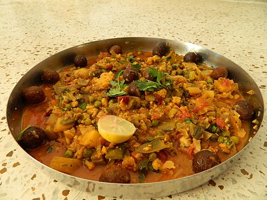

|  |
-
રસાવાળાં શાક- ઊંધિયું સામગ્રી:
- પાપડી= ૧/૨ કિ.ગ્રા.
- રવૈયા (નાના રીંગણાં) = ૧/૪ કિ. ગ્રા.
- લીલવા (લીલી તુવેર)ના દાણા - ૧/૪ કિ. ગ્રા.
- લીલાં (જાડાં) મરચાં (ભજીયાં માટે વપરાય છે તે)
- કાચાં કેળાં = ૨-૩
- બટાકા = ૧/૨ કિ.ગ્રા
- રતાળું = ૧/૪ કિ.ગ્રા.
- સુરણ = ૧/૪ કિ.ગ્રા.
- અને અન્ય લીલાં શાક જે મળે તે.
- ભરવાના મસાલા માટે:
- નારિયળનું ખમણ = ૧ વાડકો
- કોથમીર = મોટી ઝૂડી
- વાટેલા આદુ મરચાં = સ્વાદ અનુસાર
- લીલું લસણ = સ્વાદ અનુસાર
- અજમો = ૧ ચમચી
- હળદર, ધાણાજીરું, મીઠું, હિંગ, ખાંડ, સ્વાદ પ્રમાણે.
- મૂઠિયા માટે:
- ચણાનો લોટ - ૧૫૦ ગ્રામ
- મેથીની ભાજી - ૧૦૦ ગ્રામ
- મરચું, હળદર, મીઠું, હિંગ, વગેરે સ્વાદ પ્રમાણે.
|
રસાવાળાં શાક- ઊંધિયું બનાવવાની રીત:
|
- ચણાના લોટમાં મોણ નાખી, ઝીણી સમારેલી મેથી, સ્વાદ અનુસાર લાલ મરચું, હળદર, મીઠું નાંખીને ભેળવી લો.
ચણાના લોટની જગ્યાએ ઘઉંનો લોટ પણ ઉપયોગમાં લઇ શકાય છે. ઘણા લોકો તેને ફરસું રાખવા માટે મકાઇના લોટનો
પણ ઉપયોગ કરે છે. પાણી વડે કણક બાંધી, ગોળ કે લાંબગોળ મૂઠિયાં વાળી તેલમાં તળીને બાજુમાં રાખી લો.
- બટાકા, રતાળુ અને સુરણના એક-એક વેઢા જેટલા ચોરસ ટૂકડા કરીને તેલમાં લાલ થાય તેવી રીતે તળીને એક બાજુ
પર રાખો
- રવૈયામાં ઉપરથી ઊભો અને નીચેથી આડો એમ ચીરા પાડવા, મરચાને એક બાજુથી ચીરો મુકવો જેથી તેમાં મસાલો
ભરી શકાય.
- ચીરા પાડ્યા હોત તેમાં મસાલો ભરવો.
- કડાઈમાં અડધો વાડકો તેલ મૂકવું તેમાં રાઈ-હિંગનો વઘાર કરવો.
- સૌપ્રથમ પાપડી ઉમેરી દેવી તેના પ્રમાણમાં મીઠું નાખી દો. અન્ય સૂકા મસાલા અને અજમો નાખો.
- પાપડી સાંતળીને તળેલા શાક તેમાં ઉમેરો.
- ભરીને તૈયાર કરી રાખેલા રવૈયા, મરચા અને અન્ય શાક કડાઈમાં ઉમેરી દો.
- હલાવો અને બાકી વધેલો મસાલો ઉમેરીને ચડવા દો.
- શાકને ઉછાળા મારીને હલાવો.
- બધાજ શાક સંપૂર્ણ પણે ન ડૂબે તેવું પાણી રસા માટે ઉમેરો.
- ચડવા દો. રંધાઈ જાય ત્યારે પીરસો.
|